A simple, practical guide to understanding and operating the Nevari Pharmacy platform.
One dashboard. Orders, products, patients, payments, clinical requests, staff, subscriptions and oversight.
Administrator edition · July 2026 · Internal operations document
About this guide
Purpose and contents
This handbook explains how Nevari works from an administrator’s point of view and shows the routine operations performed in the Admin Storefront.
In simple terms: customers use Nevari to buy pharmacy products and request healthcare services. The administrator uses one dashboard to monitor those activities, coordinate the appropriate staff, and keep every request moving safely to completion.
01System overview3
02Dashboard orientation and daily routine4–5
03Products, orders and payments6–8
04Patients, subscriptions and staff9–10
05Consultations, MTM, IV therapy and nurse requests11–13
06Analytics, audit and settings14–15
07Safety, troubleshooting and checklists16
Important: screenshots are illustrative. Names, figures, labels, and available buttons may vary with live data, permissions, and later product updates.
01 · System overview
How the whole system works
Nevari connects the online pharmacy storefront, healthcare workflows, payments, and staff dashboards. The administrator sees the operational picture and coordinates exceptions.
Customer places an order or request
Nevari records and validates it
Payment or clinical review occurs
Assigned staff completes the work
Status and records are updated
Pharmacy commerce
Products, stock, orders, prescription requirements, delivery status, invoices, and verified payments are managed together. WooCommerce stores the core commerce records.
Healthcare services
Consultations, medication therapy management (MTM), IV therapy, and nurse requests follow their own review and scheduling workflows.
People and access
Patients create requests. Doctors, pharmacists, nurses, and administrators see only the information and actions permitted for their role.
Operational control
The dashboard gathers summaries, queues, activity history, and settings so administrators can find work that needs attention.
Security implication: the platform contains patient, prescription, and payment information. Use only your own account, share the minimum necessary information, verify records before changing them, and never copy sensitive data into unapproved tools or messages.
What the administrator is responsible for
Maintain a correct product catalog and respond to stock alerts.
Move orders forward only after prescription and payment requirements are satisfied.
Monitor care-service queues and coordinate the correct staff member.
Review staff access, unusual activity, failures, refunds, and operational exceptions.
Keep settings accurate without weakening security controls.
02 · Orientation
Your dashboard at a glance
The Overview page is the administrator’s starting point. The left navigation opens each work area; the top search finds records; the cards and panels show current performance and items that need attention.
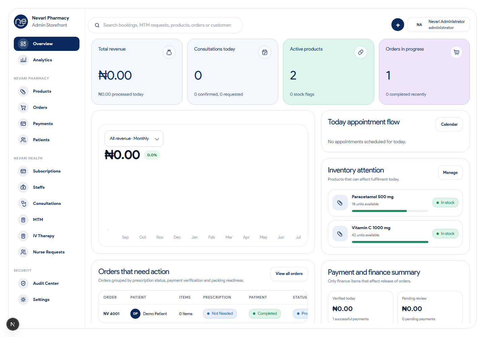
Current Administrator Overview: navigation, headline metrics, inventory attention, finance summary, and orders requiring action.
Navigation
Areas are grouped into Pharmacy, Health, and Security. The dark blue item is the page currently open.
Search and filters
Use search and page filters before scanning long lists. Clear filters if a record appears to be missing.
Metrics
Cards summarize live operational data. Click through to the relevant page before acting on an aggregate number.
Account menu
Use the profile control to confirm the signed-in account and end the session when using a shared device.
02 · Daily routine
A simple daily operating rhythm
1
Start with Overview
Check revenue/payment exceptions, consultations due today, inventory warnings, and orders needing action.
2
Clear urgent order blockers
Open Orders and prioritize prescription holds, failed or unverified payments, clinical follow-up, and delivery exceptions.
3
Review healthcare queues
Check Consultations, MTM, IV Therapy, and Nurse Requests for new, unassigned, overdue, or rescheduled work.
4
Review inventory and staff
Resolve low stock, verify new staff accounts, and confirm that responsible team members are available.
5
Close with oversight
Review payment exceptions and the Audit Center. Record or escalate anything that cannot be safely resolved.
Stop the affected action and escalate immediately.
High
Today’s appointment problem, order blocked after payment, urgent care request
Verify the record and coordinate the responsible staff member.
Routine
Catalog updates, completed-record review, standard subscription questions
Process in the normal queue and document changes.
Do not use dashboard totals as proof. Open the individual order, payment, patient, or care request and verify its details before changing a status or contacting someone.
03 · Pharmacy operations
Products and inventory
Use Products to create and maintain items sold through the pharmacy. Each record can include pricing, stock, visibility, categories, shipping information, and prescription rules.
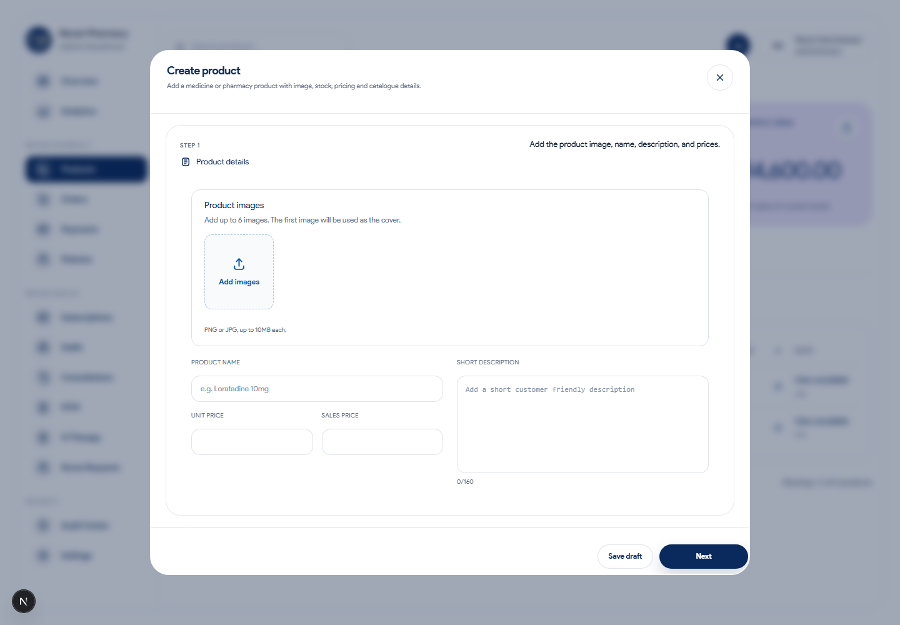
The current product editor guides administrators through images, product details, pricing, stock, prescription rules, and publishing. The same editor is used when an existing product is opened for editing.
Create a product
Select Products, then Create product.
Enter the name, description, price, and image.
Set category, stock, SKU, visibility, shipping, and prescription rule.
Review the complete record, then save as draft or publish.
Maintain inventory
Search for the product and open it.
Confirm the correct strength/variant and SKU.
Update quantity or stock status.
Save and confirm the new value in the list.
Prescription safety: never change a product from “prescription required” to unrestricted merely to allow an order to proceed. Confirm the clinical rule with an authorized pharmacist.
03 · Pharmacy operations
Orders and fulfilment
The Orders area is the main work queue for purchases and service-related orders. Filters highlight records needing prescriptions, payment, or doctor follow-up.
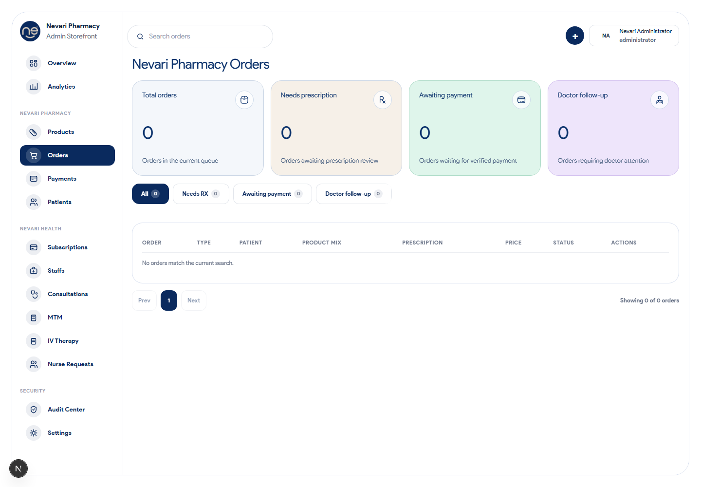
The current Orders page combines queue metrics, filters, order status, and the next operational action.
1
Open and identify
Confirm the order number, patient, items, order type, date, and current status.
Assign clinical follow-up, add an operational note, prepare fulfilment, or move the order to its next valid state.
4
Confirm the result
Refresh or return to the queue and verify that the status and audit history reflect the action.
Never mark an order paid because a customer presents a screenshot. Use the verified payment record in Nevari. Never release a prescription order until its prescription requirements are satisfied.
03 · Pharmacy operations
Payments, invoices, and refunds
The Payments page shows payment-linked orders and distinguishes completed, pending, failed, and refunded transactions. Payment processing is handled through Paystack; the dashboard reflects the server-verified result.
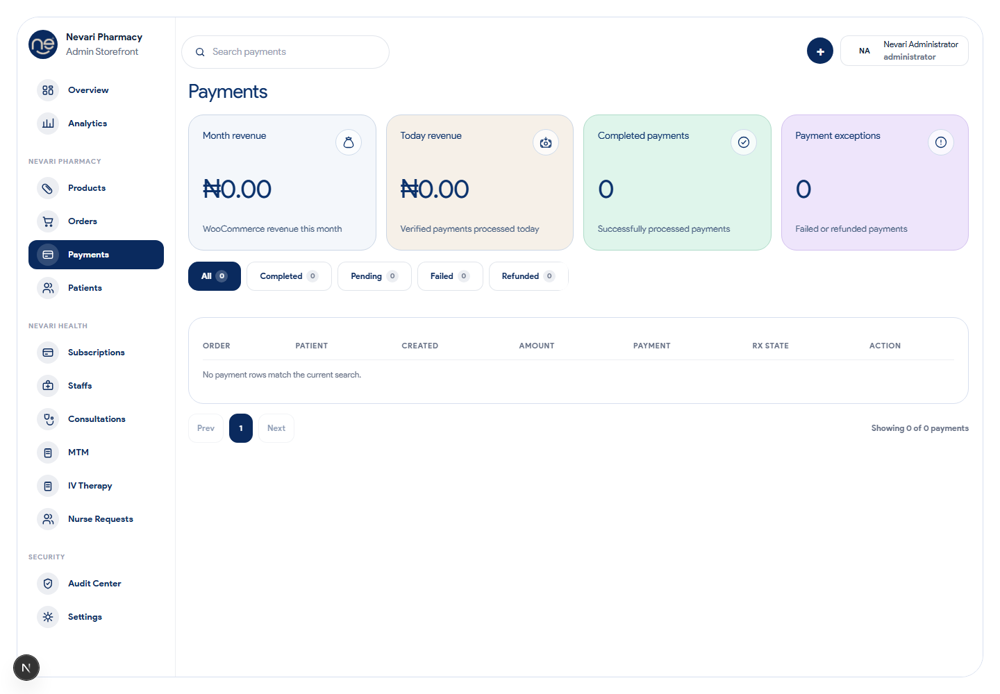
The current Payments page organizes transactions by verification state. Open a payment to check its order, amount, reference, status, and timeline.
Verify a payment
Match the patient/order, amount, currency, payment reference, and status. Use only the result recorded by the platform.
Send a document
Open the order or payment record, confirm recipient and totals, then generate or send the available invoice/receipt.
Handle a failure
Do not manually convert a failed payment to successful. Confirm whether a later verified attempt exists and guide the patient to retry when appropriate.
Handle a refund
Confirm authority, reason, amount, and original transaction. Follow the approved refund process and verify the final recorded state.
Payment data: never request or store a customer’s full card number, CVV, PIN, OTP, secret key, or raw payment token. Escalate mismatched totals or duplicate charges.
04 · People and plans
Patients and subscriptions
Patients links customer identity to orders, appointments, clinical requests, and spending summaries. Subscriptions shows plan enrolment and lifecycle states such as active, past due, or cancelled.
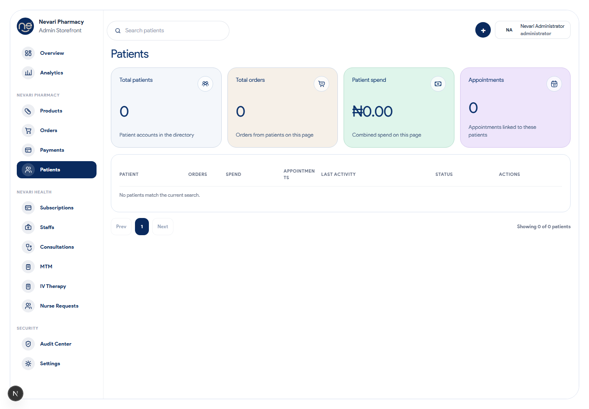
The current Patients page is the main user-account directory. Open a record to review account details, orders, subscriptions, and permitted account actions.
Patient lookup
Open Patients.
Search by a known identifier.
Confirm at least two details before discussing or editing the record.
Open the relevant order, appointment, or request from the profile.
Subscription review
Open Subscriptions.
Search for the patient or plan.
Check current status and payment/history entries.
Use only the available approved action; confirm the result afterward.
Identity matters: similar names are not proof of identity. Confirm the correct patient record before viewing, changing, or disclosing health or payment-related information.
04 · People and plans
Staff accounts and access
The Staffs area covers doctors, pharmacists, nurses, and other governed accounts. Administrators review pending registrations, approval status, assigned role, and relevant operational information.
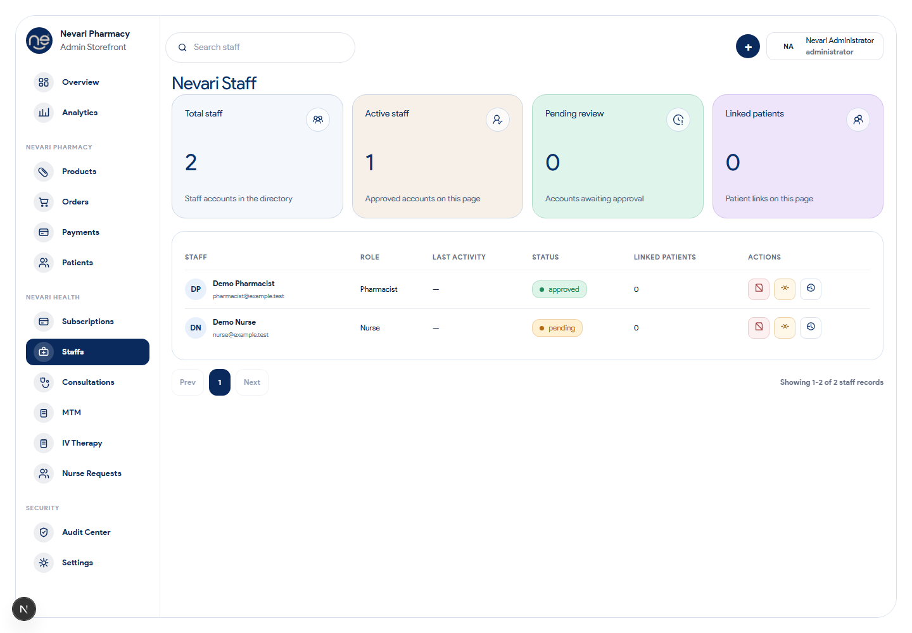
Use the current Staffs page to review identity, role, approval state, and relevant profile information before granting or changing access.
Approving or updating staff
Open Staffs and filter for pending review.
Verify identity, professional details, role, and supporting information through the approved process.
Approve, reject, or request correction using the correct account action.
Confirm the account appears under the intended role and status.
Least privilege: assign only the role required for the person’s work. Never share administrator credentials, approve an unverified professional account, or grant a broader role as a temporary workaround.
When someone leaves or changes duties
Promptly suspend or adjust access according to the approved process, reassign open work, and use Audit Center to confirm that the change was recorded.
05 · Health operations
Consultations
Consultations tracks requested, upcoming, ongoing, and past appointments. Administrators coordinate scheduling and operational readiness; clinical decisions remain with authorized clinicians.
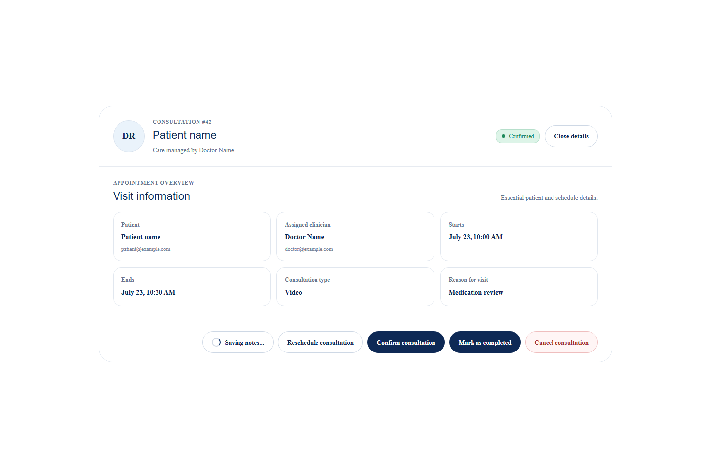
The consultation record brings together timing, patient, assigned clinician, status, and joining information.
Before the appointment
Confirm date/time and timezone, assigned doctor, patient contact, payment where required, and that the joining link is available.
For a schedule change
Open the correct appointment, use the reschedule/cancel action, confirm the new status, and ensure notifications are sent.
During the appointment
Help with access or operational issues. Do not enter the consultation or disclose details unless your role and the situation require it.
Afterward
Confirm that completion and any follow-up workflow are recorded. Do not write clinical conclusions on behalf of the doctor.
05 · Health operations
MTM and IV therapy requests
Medication Therapy Management (MTM) helps patients review medication use with pharmacy professionals. IV Therapy requests collect service selections, consent, and workflow information for staff review.
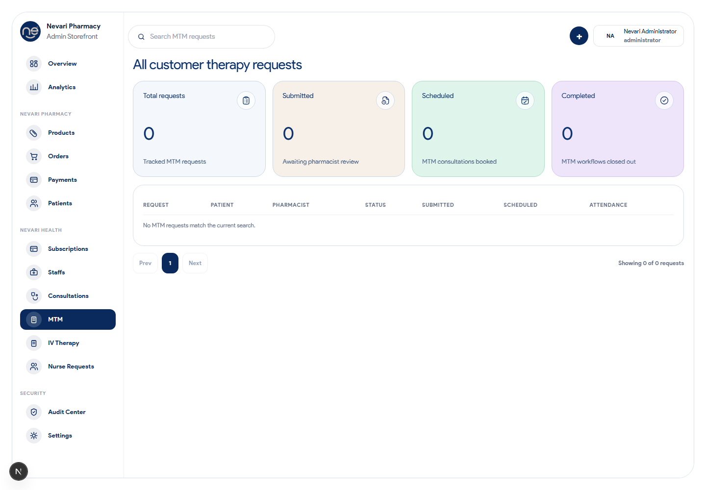
The current MTM request queue and its workflow totals.
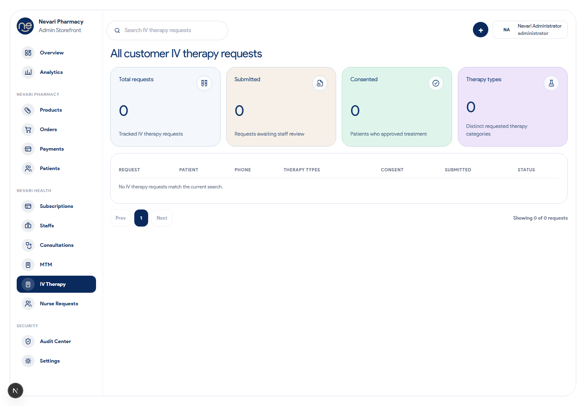
The current IV therapy request queue and its workflow totals.
Administrator workflow
Open the relevant queue and find new or outstanding requests.
Confirm the patient, request type, consent/status, payment state if applicable, and assigned professional.
Coordinate scheduling or assignment using the available dashboard action.
Monitor progress until the responsible clinician closes or advances the request.
Clinical boundary: administrators coordinate the workflow but must not diagnose, alter medication advice, approve clinical suitability, or mark clinical work complete on behalf of an authorized practitioner.
05 · Health operations
Nurse requests
Nurse Requests is the operations queue for patient requests that require nursing support. Typical stages include submitted, under review, assigned, scheduled, and completed.
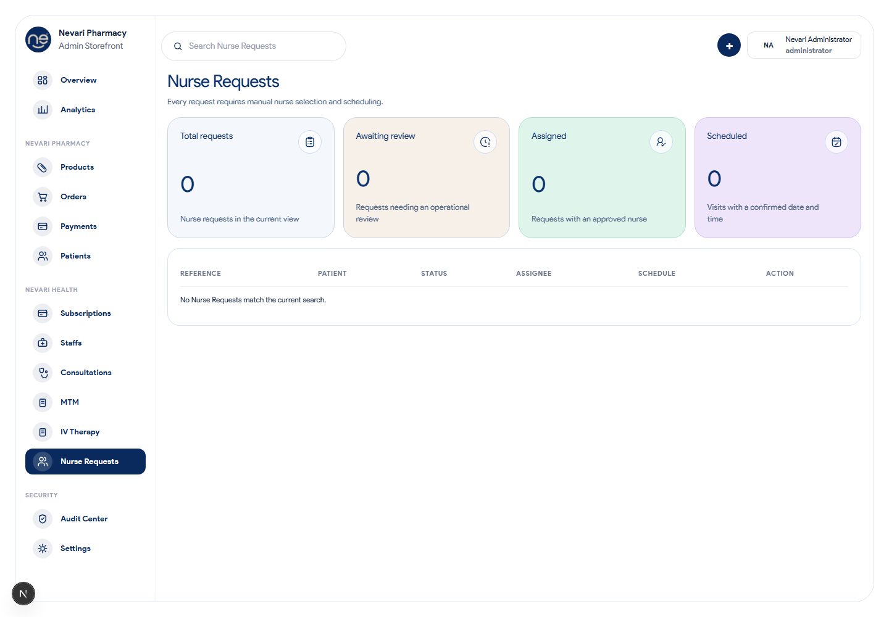
Use the current Nurse Requests page to review the request, assigned nurse, scheduled time, and status before taking action.
1
Review
Confirm the patient, requested service, location/contact information, timing, and current status.
2
Assign
Select only an approved and appropriate nurse. Confirm availability through the approved operational process.
3
Schedule
Record the agreed date and time, then confirm that the request and notifications reflect it.
4
Monitor and close
Follow up on exceptions. Completion should reflect the work actually performed and the responsible staff record.
Escalate immediately if the request suggests an emergency. The dashboard is an operations tool and is not a substitute for emergency services.
06 · Oversight
Analytics
Analytics helps administrators understand trends across sales, orders, customers, products, and operations. Use date and comparison controls to make like-for-like comparisons.
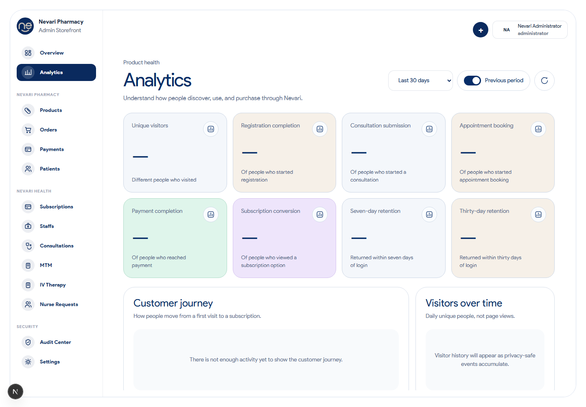
The current Analytics page converts operational records into trends and summaries for planning and review.
Ask a precise question
For example: “Did completed order value improve compared with the previous 30 days?”
Check filters
Confirm date range, currency, status, and segment before interpreting the numbers.
Investigate changes
Use the relevant operational page to inspect the records behind an unusual increase or decrease.
Export carefully
Treat exports as sensitive. Store, share, and dispose of them only through approved channels.
Remember: analytics supports decisions but does not replace record-level verification, financial reconciliation, or clinical judgment.
06 · Oversight
Audit Center and settings
Audit Center provides an activity history across important operational and security events. Settings controls store behavior such as automation, reminders, pricing, security, currency, and timezone.
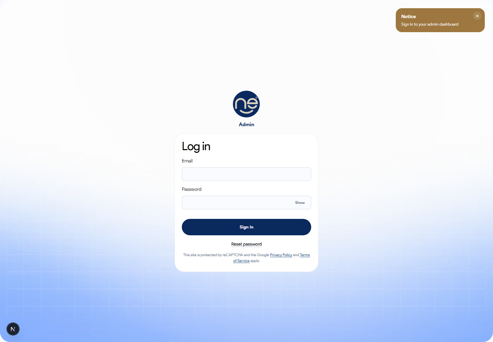
Administrator access begins at the current role-specific sign-in screen; account security and dashboard settings must both be managed deliberately.
Use Audit Center when
A status changed unexpectedly.
A payment or order action is disputed.
You need to confirm who performed an action.
A security or access issue is suspected.
Before changing settings
Understand who and what the setting affects.
Record the reason and obtain approval where required.
Change one thing at a time.
Test and confirm the intended result.
Do not weaken safeguards to fix a workflow problem. Never disable verification, broaden access, expose a secret, or bypass payment/prescription checks as a shortcut. Escalate the underlying issue.
07 · Safe operation
Checklists and troubleshooting
Start of day
Overview and urgent alerts checked
Payment exceptions reviewed
Prescription/order holds reviewed
Today’s care appointments checked
New health-service requests triaged
Low-stock items reviewed
End of day
Urgent work resolved or handed over
Failed payments and refunds followed up
Unassigned requests escalated
Unexpected audit events reviewed
Sensitive exports securely stored/removed
Session closed on shared devices
If something does not work
Problem
Safe first response
A record is missing
Clear filters, verify spelling/identifier, refresh once, and check the correct page and date range.
An action is unavailable
Check status and role. The action may be invalid for that stage. Do not seek broader access as a shortcut.
Data appears stale
Refresh and reopen the record. Avoid repeating a payment or status-changing action until its outcome is known.
A payment is disputed
Record the order and provider reference, preserve the current state, and escalate for reconciliation.
Wrong patient or clinical data is visible
Stop, do not copy or share it, note the record/time, sign out if necessary, and report the privacy incident immediately.
A technical error appears
Capture a screenshot without unnecessary patient data, record the page/time/action, and send it through the approved support channel.
Good escalation information: page name, record ID (not a full sensitive payload), time, action attempted, expected result, actual result, and a carefully cropped screenshot.
End of handbook. This document explains normal administrator operations; local policies, clinical procedures, financial controls, and privacy obligations always take precedence.